For network iterations two kinds of convergence criteria are applied: the residuals and the change in the solution must be both small enough.
For the mass and energy flow residuals 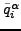 and 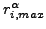 are calculated as specified in Equations (437) and (438) with 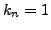 and 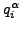 equal to the mass flow (unit of mass/unit of time) and the energy flow (unit of energy/unit of time). For the element equation is taken to be 1 (the element equation is dimensionless) and is calculated based on the element equation residuals. The residual check amounts to
| 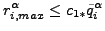 | (447) |
where 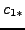 takes the value 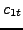, 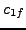 and 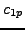 for the energy balance, mass balance and element equation, respectively. In addition, an absolute check can be performed in the form
| 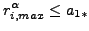 | (448) |
where 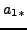 takes the value 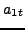,  and 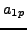 for the energy
balance, mass balance and element equation, respectively. Default is to
deactivate the absolute check (the coefficients are set to
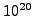).
and 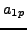 for the energy
balance, mass balance and element equation, respectively. Default is to
deactivate the absolute check (the coefficients are set to
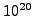).
In the same way the maximum change in solution in network iteration i 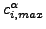 is compared with the maximum change in the solution since the start of the network iterations, i.e. the solution at the end of iteration i minus the solution at the beginning of the increment(before network iteration 1). This is done separately for the temperature, the mass flow, the pressure and the geometry. It amounts to the equation:
| 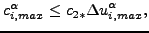 | (449) |
where takes the value 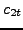, 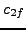, 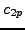 and 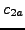 for the temperature, the mass flow, the pressure and the geometry, respectively. In addition, an aboslute check can be performed in the form
| 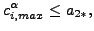 | (450) |
where 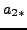 takes the value 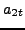, 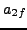 and 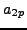 for the temperature, the mass flow, the pressure and the geometry. Default is to deactivate the absolute check (the coefficients are set to ).
The parameters , , , 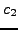, , ,
and ,  , , 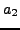, , ,
, , 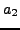, , ,
 can be changed using the *CONTROLS,PARAMETERS=NETWORK card.
can be changed using the *CONTROLS,PARAMETERS=NETWORK card.
Both criteria are important. A convergent solution with divergent residuals points to a local minimum, convergent residuals with a divergent solution point to a singular equation system (i.e. infinitely many solutions).